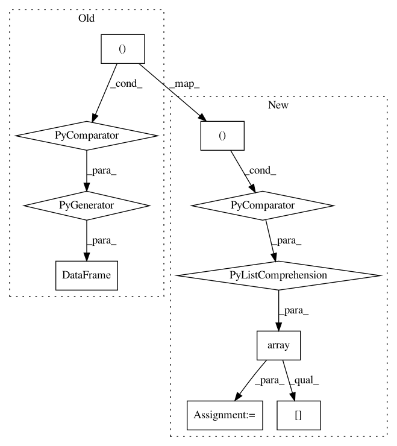

c178e788a3e34a74a3facff5848baa374f4506fa,osmnx/stats.py,,circuity_avg,#Any#,312
Before Change
raise ValueError("`Gu` must be undirected")
// extract the edges" endpoint nodes" coordinates
coords = (
(Gu.nodes[u]["y"], Gu.nodes[u]["x"], Gu.nodes[v]["y"], Gu.nodes[v]["x"])
for u, v, k in Gu.edges
)
df_coords = pd.DataFrame(coords, columns=["u_y", "u_x", "v_y", "v_x"])
y1 = df_coords["u_y"]
x1 = df_coords["u_x"]
y2 = df_coords["v_y"]
x2 = df_coords["v_x"]
After Change
raise ValueError("`Gu` must be undirected")
// extract the edges" endpoint nodes" coordinates
coords = np.array(
[
(Gu.nodes[u]["y"], Gu.nodes[u]["x"], Gu.nodes[v]["y"], Gu.nodes[v]["x"])
for u, v, _ in Gu.edges
]
)
y1 = coords[:, 0]
x1 = coords[:, 1]
y2 = coords[:, 2]
x2 = coords[:, 3]
// calculate straight-line distances as euclidean distances if projected or
// great-circle distances if unprojected
if projection.is_projected(Gu.graph["crs"]):
sl_dists = distance.euclidean_dist_vec(y1=y1, x1=x1, y2=y2, x2=x2)
else:
sl_dists = distance.great_circle_vec(lat1=y1, lng1=x1, lat2=y2, lng2=x2)
// return the ratio, handling possible division by zero
sl_dists_total = sl_dists[~np.isnan(sl_dists)].sum()
try:
return edge_length_total(Gu) / sl_dists_total
except ZeroDivisionError:
return None
In pattern: SUPERPATTERN
Frequency: 3
Non-data size: 10
Instances
Project Name: gboeing/osmnx
Commit Name: c178e788a3e34a74a3facff5848baa374f4506fa
Time: 2021-03-13
Author: boeing@usc.edu
File Name: osmnx/stats.py
Class Name:
Method Name: circuity_avg
Project Name: gboeing/osmnx
Commit Name: 4e2a294ef733417631dbb90f586127a24a043a30
Time: 2020-11-19
Author: boeing@usc.edu
File Name: osmnx/utils_graph.py
Class Name:
Method Name: add_edge_lengths
Project Name: gboeing/osmnx
Commit Name: 08884e278540cc3b3cbe780f6695bc8cbb4c05b6
Time: 2020-12-02
Author: boeing@usc.edu
File Name: osmnx/utils_graph.py
Class Name:
Method Name: add_edge_lengths